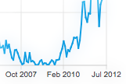

QDateTimeAxis Class
The QDateTimeAxis class adds dates and times to a chart's axis. More...
| Header: | #include <QDateTimeAxis> |
| Instantiated By: | DateTimeAxis |
| Inherits: | QAbstractAxis |
Properties
Public Functions
| QDateTimeAxis(QObject *parent = nullptr) | |
| virtual | ~QDateTimeAxis() |
| QString | format() const |
| QDateTime | max() const |
| QDateTime | min() const |
| void | setFormat(QString format) |
| void | setMax(QDateTime max) |
| void | setMin(QDateTime min) |
| void | setRange(QDateTime min, QDateTime max) |
| void | setTickCount(int count) |
| int | tickCount() const |
Reimplemented Public Functions
| virtual QAbstractAxis::AxisType | type() const override |
Signals
| void | formatChanged(QString format) |
| void | maxChanged(QDateTime max) |
| void | minChanged(QDateTime min) |
| void | rangeChanged(QDateTime min, QDateTime max) |
| void | tickCountChanged(int tickCount) |
Detailed Description
QDateTimeAxis can be set up to show an axis line with tick marks, grid lines, and shades. The labels can be configured by setting an appropriate DateTime format. QDateTimeAxis works correctly with dates from 4714 BCE to 287396 CE. For other limitiations related to QDateTime, see QDateTime documentation.
Note: QDateTimeAxis is disabled on platforms that define qreal as float.

QDateTimeAxis can be used with any QXYSeries. To add a data point to the series, QDateTime::toMSecsSinceEpoch() is used:
QLineSeries *series = new QLineSeries; QDateTime xValue; xValue.setDate(QDate(2012, 1 , 18)); xValue.setTime(QTime(9, 34)); qreal yValue = 12; series->append(xValue.toMSecsSinceEpoch(), yValue); xValue.setDate(QDate(2013, 5 , 11)); xValue.setTime(QTime(11, 14)); qreal yValue = 22; series->append(xValue.toMSecsSinceEpoch(), yValue);
The following code snippet illustrates adding the series to the chart and setting up QDateTimeAxis:
QChartView *chartView = new QChartView; chartView->chart()->addSeries(series); // ... QDateTimeAxis *axisX = new QDateTimeAxis; axisX->setFormat("dd-MM-yyyy h:mm"); chartView->chart()->setAxisX(axisX, series);
Property Documentation
format : QString
This property holds the format string that is used when creating the label for the axis out of a QDateTime object.
See QDateTime documentation for information on how the string should be defined.
Access functions:
| QString | format() const |
| void | setFormat(QString format) |
Notifier signal:
| void | formatChanged(QString format) |
See also QChart::locale.
max : QDateTime
This property holds the maximum value on the axis.
When setting this property, the minimum value is adjusted if necessary, to ensure that the range remains valid.
Access functions:
| QDateTime | max() const |
| void | setMax(QDateTime max) |
Notifier signal:
| void | maxChanged(QDateTime max) |
min : QDateTime
This property holds the minimum value on the axis.
When setting this property, the maximum value is adjusted if necessary, to ensure that the range remains valid.
Access functions:
| QDateTime | min() const |
| void | setMin(QDateTime min) |
Notifier signal:
| void | minChanged(QDateTime min) |
tickCount : int
This property holds the number of tick marks on the axis.
Access functions:
| int | tickCount() const |
| void | setTickCount(int count) |
Notifier signal:
| void | tickCountChanged(int tickCount) |
Member Function Documentation
[explicit] QDateTimeAxis::QDateTimeAxis(QObject *parent = nullptr)
Constructs an axis object that is a child of parent.
[virtual noexcept] QDateTimeAxis::~QDateTimeAxis()
Destroys the object.
[signal] void QDateTimeAxis::formatChanged(QString format)
This signal is emitted when the format of the axis changes.
Note: Notifier signal for property format.
[signal] void QDateTimeAxis::maxChanged(QDateTime max)
This signal is emitted when the maximum value of the axis, specified by max, changes.
Note: Notifier signal for property max.
[signal] void QDateTimeAxis::minChanged(QDateTime min)
This signal is emitted when the minimum value of the axis, specified by min, changes.
Note: Notifier signal for property min.
[signal] void QDateTimeAxis::rangeChanged(QDateTime min, QDateTime max)
This signal is emitted when the minimum or maximum value of the axis, specified by min and max, changes.
void QDateTimeAxis::setRange(QDateTime min, QDateTime max)
Sets the range on the axis from min to max. If min is greater than max, this function returns without making any changes.
void QDateTimeAxis::setTickCount(int count)
Sets the number of tick marks on the axis to count.
Note: Setter function for property tickCount.
See also tickCount().
int QDateTimeAxis::tickCount() const
Returns the number of tick marks on the axis.
Note: Getter function for property tickCount.
See also setTickCount().
[signal] void QDateTimeAxis::tickCountChanged(int tickCount)
This signal is emitted when the number of tick marks on the axis, specified by tickCount, changes.
Note: Notifier signal for property tickCount.
[override virtual] QAbstractAxis::AxisType QDateTimeAxis::type() const
Reimplements: QAbstractAxis::type() const.
Returns the type of the axis.